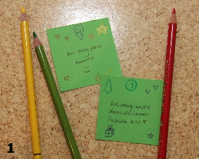
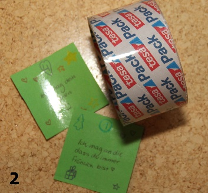
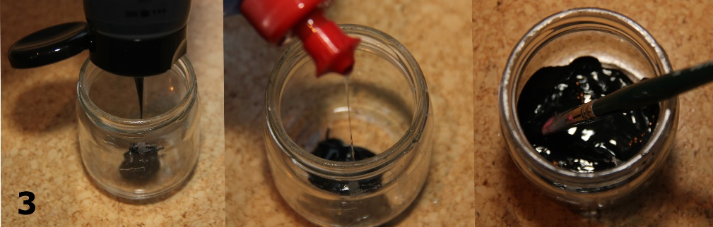
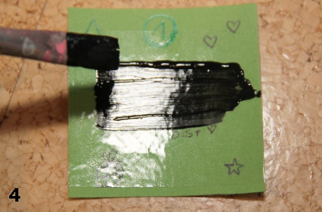
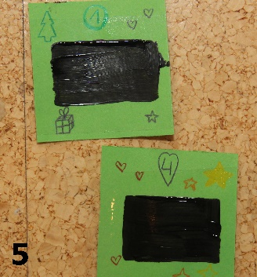
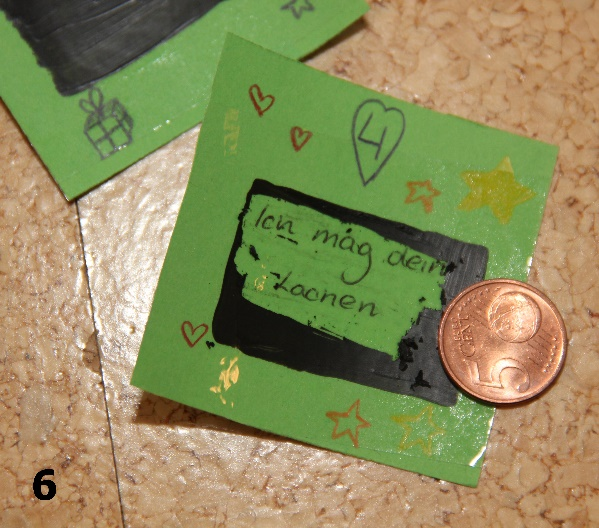

Es ist Ende November, die Stadt ist mit schönen Lichtern geschmückt und draußen ist es bitter kalt. Da kommt langsam Weihnachtsstimmung auf.
Um sich die Wartezeit bis Weihnachten zu versüßen, darf ein traditioneller Adventskalender natürlich nicht fehlen. KABU zeigt dir deshalb heute, wie du einen tollen Adventskalender selbst bastelst, den du an deine Eltern, Geschwister oder Freunde verschenken kannst.

Außerdem erklären wir dir in einem Video, woher die Tradition des Adventskalenders kommt.
Video: Adventskalender
Rubbellosadventskalender basteln
Das Beste an diesem Adventskalender ist, dass du die meisten Dinge, die du zum Basteln brauchst, bestimmt schon zuhause hast und direkt loslegen kannst.
Außerdem musst du kein Geld dafür ausgeben, belastest die Umwelt nicht mit unnötigen Käufen und machst den Beschenkten bestimmt eine große Freude.
Du brauchst:
- 24 kleine Blätter Papier (am besten dickeres Papier; die 24 Zettelchen kannst du auch aus einem großen Blatt Papier ausschneiden)
- durchsichtiges Klebeband
- Schere
- schwarze Acrylfarbe
- Pinsel
- Spülmittel
- Buntstifte
- (Glitzer, Deko…)
So geht‘s:
- Überlege dir Dinge, die auf den 24 Zettelchen deines Adventskalenders stehen sollen und schreibe sie darauf. Das könnten zum Beispiel kurze Gedichte, Sprüche oder Gutscheine sein. Du kannst aber auch auf jedes Zettelchen eine Sache schreiben, die du an der Person toll findest, der du den Kalender schenkst. Wenn du möchtest, kannst du die Zettelchen noch bemalen, Sticker darauf kleben oder sie mit Glitzer schmücken. Deiner Kreativität sind dabei keine Grenzen gesetzt.

- Wenn du die Blätter beschrieben und verziert hast, klebe transparentes Klebeband über die Schrift.

- Nun gibst du etwas schwarze Acrylfarbe in einen Becher oder ein Glas und verrührst sie mit ein bisschen Spülmittel.

- Diese Mischung wird dann dort aufgetragen, wo du Klebeband über die Schrift geklebt hast. Es ist wichtig, dass du die Farbe gut trocknen lässt.

- Und schon ist dein selbstgemachter Adventskalender fertig.

Den fertigen Adventskalender kannst du jetzt an deine Eltern, Geschwister oder Freunde verschenken. Diese müssen dann die Farbe auf den einzelnen Zettelchen mit einem Geldstück abrubbeln und können sich jeden Tag über eine kleine Nachricht von dir freuen, die unter der Farbe zum Vorschein kommt.

Ganz viel Spaß beim Nachbasteln und eine schöne Adventszeit!